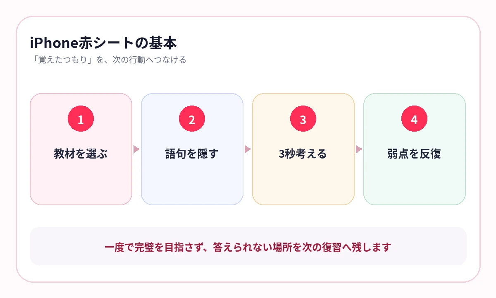
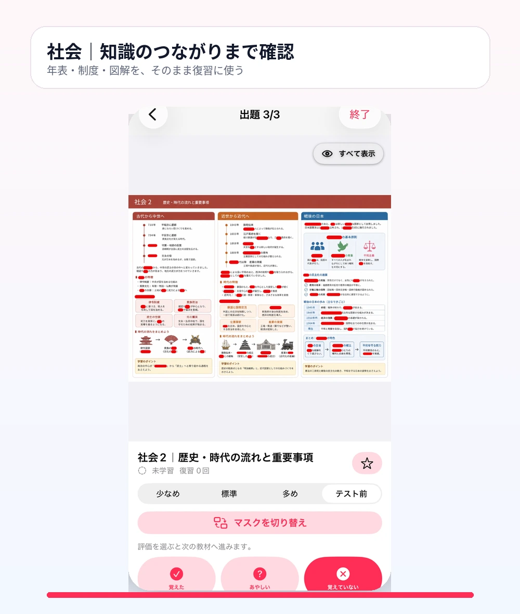

赤シートを使いたいのに、教材が赤文字ではない。持ち歩く教材が多すぎる。そんな不便を感じていませんか？
赤シート勉強法の本質は、赤い透明シートそのものではありません。答えを隠し、先に自分で思い出し、分からなかった場所をもう一度確認することです。
この流れをiPhoneの中に作れば、学校プリント、市販教材、PDFなど、今使っている教材をそのまま復習に使えます。
紙の赤シートで続きにくい3つの理由
紙の赤シートはシンプルで強力です。ただし、教材が増えると運用でつまずきます。
- 教材が赤文字や緑文字に対応していない
- 必要なページだけを外出先へ持ち出しにくい
- どこを間違えたか、次回の復習に残りにくい
- 同じ順番で見て、位置で答えを覚えてしまう
デジタル化の目的は、紙を否定することではありません。紙の良さである「隠して答える」を、今ある教材へ広げることです。
1ページに隠すのは、10〜30か所から
最初からページ全体を真っ赤にすると、何も答えられず、復習が重くなります。
まずは見出し、太字、人物名、用語、数字など、テストで直接聞かれやすい箇所から始めます。
- 問いとして成立する
- 前後の文から答えを推測しすぎない
- 図や表の位置関係と一緒に覚えたい
- 間違えたときに説明へ戻れる
隠す量の多さではなく、答えた回数が定着を作ります。
{kind=link}

5分で終わる単位に分ける
スマホ学習は、長時間の集中より、待ち時間や移動時間へ入りやすいことが強みです。
1回5分で終わるページを用意しておけば、「時間がある日に勉強する」から「空いたら1枚答える」へ変わります。
朝
前日に迷った1ページを確認します。
移動中
答えを見ずに10〜20語だけ思い出します。
夜
「あやしい」「覚えていない」だけをもう一度出します。
数日後
順番を変え、同じ知識をもう一度答えます。
横にスワイプして画像を確認できます

{kind=link}

答えを見る前に、3秒だけ待つ
スマホでは、タップすればすぐ答えが見えます。だからこそ、すぐ開かないルールが必要です。
答えが出なくても、3秒だけ思い出そうとする。その後に確認する。この小さな間が、読むだけの学習と、思い出す練習を分けます。
タップの速さより、答えを探す3秒を大切にしてください。
教材を撮って、マスク量を変える
AI暗記シートでは、紙の教材を撮影するか、画像やPDFを取り込み、重要語句を暗記マスクに変えます。
最初は「標準」で確認し、テスト前は隠す量を増やす。同じ教材を作り直さず、習熟度に合わせて難しくできます。
最初の確認
少なめ・標準で、主要語句を確実に答えます。
範囲の総復習
多めで、細かな語句や数字まで確認します。
テスト直前
テスト前で、答えの手掛かりを減らして仕上げます。
よくある質問
赤文字ではない教材でも使えますか？
はい。画像上の重要語句をマスクするため、印刷色に依存せず、一般的なプリントや教材でも使えます。
スマホ学習だけで覚えられますか？
暗記部分の確認には向いています。答えた後に説明を読み直したり、問題演習で使えるか確認したりすると、知識がつながります。
一度に何ページ取り込むべきですか？
最初は1〜3ページで十分です。使う習慣ができてから、テスト範囲や単元ごとに増やしてください。
参考情報
試験範囲・制度は公式情報、復習方法は学習科学の研究を参照しています。
赤シートを、持ち歩かなくてもいい
今の教材を、iPhoneの暗記テストへ
写真やPDFから重要語句を隠し、覚えた・あやしい・覚えていないを記録。空いた5分を復習へ変えます。
iPhone・iPad対応／3枚まで無料保存／継続利用は800円の買い切り